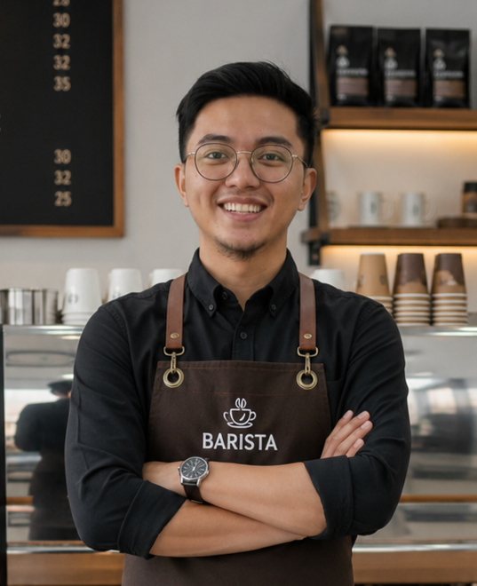

Di balik setiap secangkir kopi yang terjual, terdapat keputusan bisnis yang harus dibuat secara optimal. Sumber daya seperti bahan baku, waktu produksi, dan modal memiliki keterbatasan, sedangkan keuntungan harus dimaksimalkan. Dalam situasi inilah SPtLDV digunakan.
Sistem Pertidaksamaan Linear Dua Variabel (SPtLDV) adalah kumpulan beberapa pertidaksamaan linear yang memiliki dua variabel (x dan y) yang mana dua atau lebih pertidaksamaan linear diterapkan secara bersamaan. Penyelesaiannya berupa suatu daerah fisibel (feasible region) pada bidang koordinat Cartesian.
Setiap pertidaksamaan merepresentasikan satu kendala (constraint), seperti modal usaha, ketersediaan bahan baku, waktu proses produksi, dll., sedangkan Z = px + qy disebut fungsi tujuan (objective function), seperti keuntungan bisnis, dan sebagainya.
Contoh Konteks Coffee Lab:
Sebuah kedai memproduksi:
Es Kopi Susu (x)
Americano (y)
dengan kendala stok biji kopi:
15x + 20y ≤ 600.
SPtLDV merupakan fondasi Program Linear yang digunakan untuk menentukan kombinasi produksi terbaik agar keuntungan maksimum dapat diperoleh tanpa melanggar keterbatasan sumber daya.
Keterangan: Area berwarna menunjukkan seluruh kombinasi (x, y) yang memenuhi semua kendala.
Sebuah kedai kopi memproduksi dua jenis kopi dengan keterbatasan waktu mesin sebagai berikut:
Z = 300.000x + 200.000y
Setiap pertidaksamaan ax + by ≤ c digambarkan sebagai garis ax + by = c, lalu daerah yang memenuhi diarsir. Irisan semua daerah arsiran membentuk daerah fisibel.
Nilai optimum fungsi tujuan linear selalu di salah satu titik pojok daerah fisibel. Hitung Z di setiap titik pojok, lalu pilih yang terbesar.
Dalam konteks nyata (jumlah cup tidak bisa desimal), kita perlu memastikan titik optimum berupa bilangan bulat. Batasan (c) harus dipilih agar semua perpotongan garis menghasilkan bilangan bulat.
Kedai kopi memproduksi Espresso dan Cappuccino. Sebagai seorang Business Analyst, ikuti langkah berpikir komputasional (Computational Thinking) berikut untuk menentukan keuntungan maksimum.
Contoh:
Contoh persamaan garis 15x + 20y = 600:
Daerah penyelesaian merupakan irisan seluruh daerah yang memenuhi semua kendala pertidaksamaan di atas.
Contoh koordinat kandidat solusi:
Contoh fungsi laba: Z = 8000x + 6000y
Nilai maksimum keuntungan bisnis ini diperoleh tepat pada titik optimum tersebut.
Jumlah cup kopi tidak bisa berupa bilangan desimal — Anda tidak bisa membuat 42.5 cup Espresso! Oleh karena itu, nilai batas (slider) harus dipilih dengan cermat agar semua titik perpotongan garis kendala menghasilkan bilangan bulat. Jika hasil perpotongan desimal, geser slider ke nilai terdekat yang menghasilkan bilangan bulat.
Kedai Kopi Nusantara memproduksi dua menu andalan per hari. Berikut kebutuhan sumber daya per cup:
| Menu | Modal/Cup | Waktu/Cup | Kopi/Cup | Keuntungan/Cup |
|---|---|---|---|---|
| Espresso (x) | Rp200.000 | 1 menit | 10 gram | Rp15.000 |
| Cappuccino (y) | Rp100.000 | 3 menit | 10 gram | Rp20.000 |
Atur batas harian melalui slider. Pastikan indikator menunjukkan bilangan bulat sebelum menjalankan simulasi!
Estimasi nilai x dan y yang memberikan keuntungan maksimum.
Jawablah pertanyaan berikut.
Apa yang diwakili variabel x dan y?
Tuliskan fungsi tujuan dan jelaskan makna koefisiennya.
Nyatakan ketiga kendala dalam pertidaksamaan. Jelaskan asal koefisiennya.
Jelaskan langkah menentukan titik pojok daerah fisibel.
Mengapa x dan y harus bulat? Apa yang terjadi pada slider jika nilai tidak bulat?
Berikan rekomendasi kepada pemilik kedai.

Laboratorium ini dikembangkan sebagai media pembelajaran interaktif untuk mata pelajaran Matematika Fase E, elemen Aljabar dan Fungsi, materi SPtLDV. Didesain dengan pendekatan Problem Based Learning dan Computational Thinking.
Coffee Business Lab v1.0 © 2025